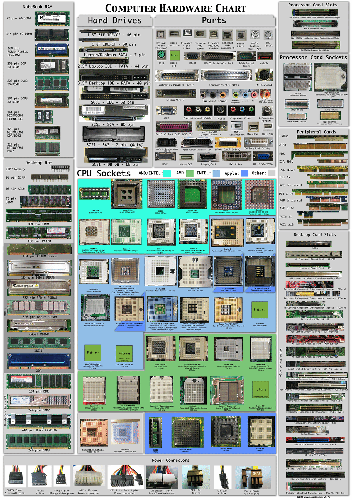

What is computer hardware?
Computer hardware is a collective term used to describe any of the physical components of an analog or digital computer. The term hardware distinguishes the tangible aspects of a computing device from software, which consists of written, machine-readable instructions or programs that tell physical components what to do and when to execute the instructions.
Hardware and software are complementary. A computing device can function efficiently and produce useful output only when both hardware and software work together appropriately.
Computer hardware can be categorized as being either internal or external components. Generally, internal hardware components are those necessary for the proper functioning of the computer, while external hardware components are attached to the computer to add or enhance functionality.
What are internal computer hardware components?
Internal components collectively process or store the instructions delivered by the program or operating system (OS). These include the following:
- Motherboard: A printed circuit board that holds the central processing unit (CPU) and other essential internal hardware and functions as the central hub that all other hardware components run through.
- CPU: The CPU is the brain of the computer that processes and executes digital instructions from various programs; its clock speed determines the computer's performance and efficiency in processing data.
- RAM: RAM -- or dynamic RAM -- is temporary memory storage that makes information immediately accessible to programs; RAM is volatile memory, so stored data is cleared when the computer powers off.
- Hard drive: Hard disk drives are physical storage devices that store both permanent and temporary data in different formats, including programs, OSes, device files, photos, etc.
- Solid-state drive (SSD): SSDs are solid-state storage devices based on NAND flash memory technology; SSDs are non-volatile, so they can safely store data even when the computer is powered down.
- Optical drive: Optical drives typically reside in an on-device drive bay; they enable the computer to read and interact with nonmagnetic external media, such as compact disc read-only memory or digital video discs.
- Heat sink: This is a passive piece of hardware that draws heat away from components to regulate/reduce their temperature to help ensure they continue to function properly. Typically, a heat sink is installed directly atop the CPU, which produces the most heat among internal components.
- Graphics processing unit: This chip-based device processes graphical data and often functions as an extension to the main CPU.
- Network interface card (NIC): A NIC is a circuit board or chip that enables the computer to connect to a network; also known as a network adapter or local area network adapter, it typically supports connection to an Ethernet network.
Other computing components, such as USB ports, power supplies, transistors and chips, are also types of internal hardware.
This computer hardware chart below illustrates what typical internal computer hardware components look like.
What are external hardware components?
External hardware components, also called peripheral components, are those items that are often externally connected to the computer to control either input or output functions. These hardware devices are designed to either provide instructions to the software (input) or render results from its execution (output).
Common input hardware components include the following:
- Mouse: A mouse is a hand-held pointing device that moves a cursor around a computer screen and enables interaction with objects on the screen. It may be wired or wireless.
- Keyboard: A keyboard is an input device featuring a standard QWERTY keyset that enables users to input text, numbers or special characters.
- Microphone: A microphone is a device that translates sound waves into electrical signals and supports computer-based audio communications.
- Camera: A camera captures visual images and streams them to the computer or through a computer to a network device.
- Touchpad: A touchpad is an input device, external or built into a laptop, used to control the pointer on a display screen. It is typically an alternative to an external mouse.
- USB flash drive: A USB flash drive is an external, removable storage device that uses flash memory and interfaces with a computer through a USB port.
- Memory card: A memory card is a type of portable external storage media, such as a CompactFlash card, used to store media or data files.
Other input hardware components include joysticks, styluses, and scanners.
Examples of output hardware components include the following:
- Monitor: A monitor is an output device similar to a TV screen that displays information, documents, or images generated by the computing device.
- Printer: Printers render electronic data from a computer into printed material.
- Speaker: A speaker is an external audio output device that connects to a computer to generate a sound output.
- Headphones, earphones, earbuds: Similar to speakers, these devices provide audio output that's audible only to a single listener.